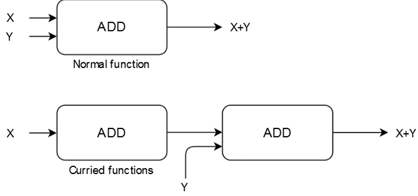
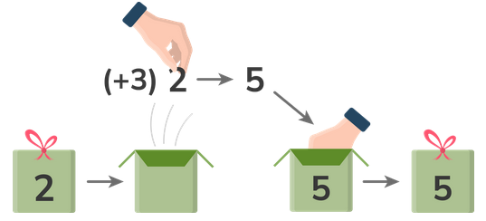
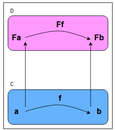

Functional Programming
In any programming language, functions are said to be first-class citizens if they can be treated like any other variable. For instance, they can be passed as an argument to other functions, can be returned by another function, and can be assigned as a value to a variable.
first-class citizens
Functions can be treated as ordinary values. They can be passed in as parameters, returned from other functions, and so on.
What are not the advantages of types? Types make code compilation faster.
> Note: In functional programming, we write programs by letting objects interact with each other is a myth.
What are the advantages of functional programming?
- Functional programming helps us deal with parallel programming.
- Functional programming makes managing complex applications easier.
To write functional code in JavaScript, we can turn to libraries such as Lodash, Ramda, or Folktale. We’ve already discussed Ramda Ramda and Folktale, but unfortunately, they’re insufficient. Ramda lacks the extremely useful concept of monads, on which several more advanced functional programming techniques are based. Folktale is a small library with some of the essential monads, but it has very few other features. It lacks some more powerful functional programming features like monad transformers. Another disadvantage of Folktale is that the library hasn’t received much support during the last few years.
Instead, we’ll use a TypeScript library called fp-ts. It has several advantages:
- It’s written in TypeScript.
- It has many stars on GitHub.
- It’s actively maintained.
- It has powerful monads.
- It has an ecosystem of libraries that add even more functionality.
Statement vs Expression
What is the difference between a statement and an expression? An expression always produces a value; a statement does not.
Setup
However, be sure to set the target property in tsconfig.json no lower than es6. Later on, we will use webpack to build our output and show the tsconfig.json file that goes with that setup.
pnpm i --save fp-ts@~2.8.6
Closure
Closures can be used to hide information from other functions. The behaviour depicted in the code snippet below is called closure. With closures, the inner function has access to all the information available in the outer function. This is why the value of the parameter outer is still available when we call ourInnerFunction that was returned from withInnerFunction. The functions receiving or returning other functions are called higher-order functions.
function withInnerFunction(outer) {
return function ourInnerFunction(inner) {
console.log(`Outer function received ${outer}, inner got ${inner}`);
};
}
const returnedFunction = withInnerFunction('a');
// some time later in our program, we actually need to call returnedFunction
returnedFunction('b');
To:
const withInnerFunction = (outer) => (inner) => console.log(`Outer function received ${outer}, inner ${inner}`);
const returnedFunction = withInnerFunction('a');
returnedFunction('b');
This is interesting because it allows us to pass additional information that might serve as an environment or state into our function. Closures and first-class functions allow for more interesting behavior such as creating factories for building functions, keeping parameter lists short, reducing code duplication, and so on. Furthermore, closures are the only way to make a variable private in JavaScript because we can circumvent all the other methods.
Note: Arrow functions are essentially the same as functions defined using the function keyword, except when it comes to the this keyword. However, we will not use the this keyword in this course.
ADTs | Pipes
Algebraic data types (ADTs) in functional programming can be extremely useful. We’ll discuss them in detail later on. However, in TypeScript, we can use discriminating unions (also called tagged unions) to get sum types. These sum types are a category of ADTs, and creating them does require a bit of ceremony, though. In a language like Haskell, we can make very powerful pattern matching on sum types. There are libraries in the fp-ts ecosystem that try to add some of this power to TypeScript, e.g., morphic-ts. However, TypeScript can already do some cool things with these unions. Product types is a kind of ADTs that allow us to easily model subtypes that have different properties, occusionally, the need for optional values or (boolean) flags.
Pure Function
A pure function is one with a result that’s based solely on the input it receives. So, as long as the input doesn’t change, the output doesn’t change either. This means that it has no side effects. So A pure function is not a function that always returns a value.
Referential Transparency
A related concept, referential transparency, also helps us in coding. It means that we can replace a function call with the value it produces.
function biggerProgram() {
const result = addOne(5);
return result * 2;
}
Immutability
Immutability is another frequently mentioned element of functional programming. Instead of changing our existing data structures, we create new data structures whenever we change any information. This makes reasoning easier. No other process could’ve changed the array we just received from our function because it’s an entirely new data structure! We can see another obvious advantage of immutability in parallel programming. In the words of Adam Smith, “Threads coming together with mutable data ends in a conspiracy against your sanity”.
Note: Even when we’re not doing any fancy parallel programming, some easily missed mutability bugs can waste our time. For instance, let’s assume we have arrays of the const type, and we’re using shift to get the first element of those arrays. The usage of shift mutates our arrays in place. Such bugs can cause problems within our program.
Performance may suffer in some cases, especially when our language isn’t written for immutability. As always, this is a matter of trade-offs. Is excellent performance essential, or is the combination of a lack of bugs, easier maintenance, and decent performance acceptable?
Note: JavaScript, sadly, wasn’t written with immutability in mind. Therefore, several libraries offer to add immutable data structures. It’s better to have the language handle everything for us, though, despite the loss of immutability.
Declarative programming style
Functional programming tries to lift this behavior to a higher level of abstraction. Whenever possible, the low-level behavior is left to the computer. First, functional programming offers a more declarative style of programming. Object-oriented programming has an imperative feel because our program consists of a list of instructions to execute (or objects to execute). Declarative: I want a dinner with chicken. Imperative: Kitchen -> Open Fridge -> Removing Chicken from Fridge -> Dinner on the table.
Declarative example:
const exampleArray = [1, 2, 3, 4];
function addOneToEach(arr) {
for(let i = 0; i < arr.length; i++) {
arr[i] = arr[i] + 1; //mutable data structures
}
return arr;
}
console.log(addOneToEach(exampleArray));
Imperative example:
const exampleArray = [1, 2, 3, 4];
function fpAddOneToEach(arr) {
return arr.map(el => el + 1); // add 1 to each element of array, immutable data structures
}
console.log(fpAddOneToEach(exampleArray));
Another advantage of higher-order functions is that they often use immutable data structures. The loop in the first example above, on the other hand, mutates the existing array and is error prone(imperative)
Note: Modify the second code snippet above and include the loop version (from the first example), followed by the functional programming version (from the second example). Notice how the functional programming version now returns [3, 4, 5, 6] instead of [2, 3, 4, 5]. This is because the exampleArray has been modified by the loop version.
Tacit programming
Recall composition and our addOne function from an earlier example. Using it within map is trivial, as shown below.
const exampleArray = [1, 2, 3, 4];
function addOne(el) {
return el + 1;
}
function fpAddOneToEach(arr) {
return arr.map(addOne);
}
console.log(fpAddOneToEach(exampleArray));
The above is called point-free style or tacit programming. The function we passed in expects one argument, and map produces one. We don’t have to write el => addOne(el) because JavaScript knows it has to pass the incoming value to the function.
So, with higher-order functions like filter and map, we only have to write logic that filters or transforms a single element. The rest is handled by the higher-order function. We know how to increment a single value, and we can now handle arrays without writing any additional code!
Additionally, in functional languages, maps are available for more than just arrays, further extending the usefulness of this function. Because functions like map and filter are more abstract and less bound to specifics, they can be applied in many situations. They work with any kind of array we throw at them. In contrast, the object methods only know how to do things for one specific class.
The corresponding Javadoc mentions the following:
- Stream pipeline results may be nondeterministic or incorrect if the behavioral parameters to the stream operations are stateful.
- Side effects in behavioral parameters to stream operations are, in general, discouraged, as they can often lead to unwitting violations of the statelessness requirement, as well as other thread-safety hazards.
In summary, choose pure functions for reliable behavior when using streams. The Javadoc notes in several locations that this is also a requirement for parallelism, for reasons that are no longer a mystery. That is, pure functions behave in a predictable fashion. However, with side effects and mutations, the result might be unpredictable.
Recursion
Recursion is another way that functional programming deals with repetition and avoiding loops. Recursion means solving a problem by breaking it up into smaller problems.
Recursion often leads to elegant solutions for complicated problems. However, it’s not frequently used in mainstream languages like JavaScript because the repeated function calls cause the stack to grow, possibly resulting in a stack overflow. In this course, we’ll mainly use higher-order functions to solve problems involving repetition.
Higher-order functions and composition
The composition order (right to left) is probably inspired by mathematics. That is, if we have an f(g(x)) function, we first calculate g(x) and pass the result, y, to the outer function, f(y).
Abstraction makes the program cleaner, shorter, and reusable.
we created new functionality out of existing functions, similar to what we did with map and filter. The composition has several nice qualities to it. For one, we don’t have to change our existing functions. Instead, our new functionality is created out of existing code
const compose = (...fns) => (...args) => {
return fns.reduceRight((res, fn) => [fn.call(null, ...res)], args)[0];
};
const coolName = (name) => `${name} a.k.a. King`;
const yelling = (name) => name.toUpperCase();
const yellingACoolerName = compose(yelling, coolName);
const result = yellingACoolerName('sam'); //Line 10
console.log(result); //Output: SAM A.K.A. KING
Line 10: We start with a reduceRight on our array of functions. First up is coolName, which receives the sam parameter as the preliminary result. The function is called and adds a cool suffix to the name. Next, our reduce starts working on the yelling function. It, too, receives a preliminary result, which is the name with the suffix that was just added. It returns this parameter in uppercase.
Note:
For those with Linux experience, this type of composition is similar to the Unix Philosophy of piping. That is, to work with small programs that do one thing well and use pipes to combine them to form larger functionality. As those familiar with Bash will know, the versatility and power of piping, using only basic Unix components, is impressive.
Information hiding using composition
We can also use composition for information hiding. For example, we could decide to only expose yellingACoolerName, hiding the functions it’s made of. Because we don’t use classes, modules provide our most important means of hiding information.
What is currying?
Currying involves converting the function, combining multiple arguments into a series of functions that are executed one after another. In other word, process changes a function with multiple arguments into multiple functions that take a single argument and return the next function.
Whenever we feed it an argument, we can write a function that returns another function that also accepts an argument and returns a function. This continues to happen until the final argument is passed. When that happens, the code block executes. This is called currying, and it’s very popular in functional languages like Haskell and F#. The following code snippet is a boilerplate example of currying:
const decrypt = (m) => `{ "userType": "admin", "message": "${m}" }`;
const userTypeLens = (fallback) => (userInfo) => userInfo.userType || fallback;
const auth = (type) => type === 'admin' ? ({ allow: true }) : ({ allow: false }); //Line 3
const userTypeLensDefaultNone = userTypeLens('none'); //Line 7
const compose = (...fns) => (...args) => {
return fns.reduceRight((res, fn) => [fn.call(null, ...res)], args)[0];
};
//Remember to read from right to left or bottom to top
const authAnswer = compose(
JSON.stringify,
auth,
userTypeLensDefaultNone,
JSON.parse,
decrypt,
);
console.log(authAnswer('a message'));
Line 3: Here, we retrieve a field from the incoming argument, userInfo, and return a fallback if the field is missing. Lenses in functional programming are used to retrieve or change data in a data structure. They make it easy to modify a single value within immutable, complicated structures. Real lenses such as “monocle-ts” are more complicated than this example.
Line 7: We fill in our fallback value, which is the string none.
Note:
Closely linked to currying is the partial application, which feeds a functioning part of the arguments it needs at a given time and calls the function with the remaining arguments later. Python has a function called partial that can help us accomplish the same result.
Why is currying useful?
Currying allows us to add configurations or dependencies to a function at one point and call it at a later time. We ensure that our function has everything it needs to run correctly. It merely has to wait for the final input data for execution. Furthermore, currying can make our code easier to understand when dealing with functions that take many arguments. There’s another reason for currying in the composition context. In our example above, each function we use inside the authAnswer requires one argument. Conveniently, all our functions return one value, namely a string, boolean, or an object, making them easy to compose.
Combining Currying and Composition
Learn how to use currying and composition together for functions that take multiple arguments.
Function with one parameter value
Composing is easy when we have a scenario like this:
- Function ONE accepts a parameter of type A and returns a value of type B.
- Function TWO accepts a parameter of type B and returns a value of type C.
- Function THREE accepts a parameter of type C and returns a value of type D.
Note: In a Haskell or F# type of notation, the signatures of the functions above will be as follows:
ONE :: A -> B
TWO :: B -> C
THREE :: C -> D
COMBINED :: A -> D
Function with multiple parameter values
Example of currying:
const TWO = (first) => (second) => {
if(first && second) {
return 'ok';
}
throw Error('Did not receive two params!');
}
const twoWhichWeWillPassToThree = TWO('first argument already given');
console.log(twoWhichWeWillPassToThree('giving second argument'));
Rewriting the above, we have:
ONE :: A -> C
TWO :: B -> C -> D
THREE :: D -> E
COMBINED :: A -> E
This can’t be combined, so we give function TWO a value B, which returns a new function for us to use: FUNCTION_RETURNED_BY_TWO :: C -> D.
This fits perfectly. Currying can be a huge help when composing functions with input and output values that are mismatched. We give what we can, and the rest will be filled in later. Consequently, a function’s final argument is often the data we’re operating on, while earlier arguments consist of things like configuration and dependencies. This is because we’ll usually already know what those configurations or dependencies will be. However, we only know what the data looks like when we receive it.

Note: Though they occasionally get in the way, types are generally very useful when composing functions. If a function expects type A and we instead feed it a function that returns A, it will complain. Meanwhile, JavaScript accepts everything we throw at it and crashes at runtime. In our example(fp-ex15.ts), try using userTypeLens (line 3) instead of the partially applied variant userTypeLensDefaultNone (line 7). JavaScript now returns { allow: false }, despite receiving an admin.
Problems with Currying and Composition
Asynchronous actions
Now, we know how to compose functions to create our software. We also know how currying can help with functions that don’t naturally fit together because they have the wrong types or number of parameters. However, we’ll still have some issues with TypeScript and JavaScript. The most important issue might be that a lot happens asynchronously. Take a look at the following code snippet:
const compose = (...fns) => (...args) => {
return fns.reduceRight((res, fn) => [fn.call(null, ...res)], args)[0];
};
const givesAPromise = (num) => Promise.resolve(num);
const doubleIt = (num) => num * 2;
const doubled = compose(doubleIt, givesAPromise);
console.log(doubled(2)); // Output NaN
How do we fix it? If we want to write pure JavaScript, we could use then(), which is provided by Promise, to retrieve a result to work with. This is certainly not a bad idea. However, we might run into some limits and, more generally, our entire program will have to use Promises everywhere.
What are monads?
How can we avoid exceptions? How will we handle error cases without them? If Promises aren’t ideal for asynchronous behavior, what should we use instead? Enter the dreaded monads!
In several functional languages, putting the value inside the monad is called return. But, because return is a keyword in JavaScript, we’ll find various other words for it, like of.
- Monads can be compared to a container.
- The various constructors for monads in fp-ts are called lifting functions.
Functors
We have a value inside a container. What does that get us? Well, monads have several functions that influence or change that value. For example, the monad function map takes a function that might be applied to the value inside the container. Why do we say “might”? (Please attention to line 4 of follow example)
Note:
Technically, monads only define bind, chain, or flatmap methods, but not a map, which is part of the definition of a Functor. However, monads are functors, so our current explanation is good enough.

Option monad
An example might make things easier to understand. Let’s take a look at the Option monad from fp-ts.
The map function
Line 4: We can also tell Option that we don’t currently have any values to give to it (hence the name Option). It can have a value, but it might not. So, we tell it that we have nothing by passing none, a constant representing an empty Optional.
Line 5: Now, we call map and pass it the function we defined in line 2 as a first argument. The second argument is the value we created in line 3.
Line 7: Here, we log the value contained inside the monad. Because it’s wrapped inside our container, we need a helper to get it out. The getOrElse function retrieves the value or uses the function we pass in as the first argument as a fallback if the Option turns out to be empty. If empty, our fallback returns the string with no value present. Here, the result will be A VALUE. The function passed to map in line 5 converts the original value passed in line 3 to uppercase.
import {getOrElse, map, none, some} from "fp-ts/lib/Option";
const upperCaseIt = (value: string) => value.toUpperCase();
const optionWithAString = some('a value');
const optionEmpty = none;
const upperCased = map(upperCaseIt)(optionWithAString); //Line 5
const upperCasedEmpty = map(upperCaseIt)(optionEmpty);
console.log(getOrElse(() => 'no value present')(upperCased)); //Line 7
console.log(getOrElse(() => 'no value present')(upperCasedEmpty));
Option gives us a way out. It offers us the ability to apply functions to values without worrying about how null will make it crash. If the value is missing, null or undefined, for example, our code will sit there, do nothing, and give back the same none value.
The chain function
The chain function can combine and flatten monads in fp-ts.
import {chain, getOrElse, none, some} from "fp-ts/lib/Option";
const upperCaseSam = (name) => name === 'Sam' ? some(name.toUpperCase()) : none;
const optionWithNameSam = some('Sam');
const optionWithNameSmith = some('Smith');
const upperCasedName = chain(upperCaseSam)(optionWithNameSam);
const noneUpperCasedName = chain(upperCaseSam)(optionWithNameSmith);
console.log(getOrElse(() => 'no value present')(upperCasedName));
console.log(getOrElse(() => 'no value present')(noneUpperCasedName));
Line 5: We apply the function defined at line 2 to the Option defined on line 3. Line 6: We apply the function defined at line 2 to the Option defined on line 4.
Line 8: This prints no value present to the console. This is the default value. Therefore, our Option will be none. We had a container with the value Sam, and we applied a function to that inner value that returned another container with SAM inside it, defined as Option<Option
Note:
Why is flattening so useful?
While monads offer a lot of useful behavior, nesting offers no additional advantages. It just produces more repetitive code because we’d have to unwrap the value multiple times. So, it’s best to get rid of the additional wrappings.
That leaves us with an outer Option that contains an empty none Option. Consequently, our chain decides that this result, once flattened, is equal to none. The empty Option infects all of the outer ones. It signifies a missing value, no matter how many times we wrap it with Option.
Advantages of Monads
Combining effects and purity
Monads exist to handle effects. As discussed earlier, functional programming likes purity. However, effects such as writing to a database or calling some API ruin this purity. This is because the call might work one moment and fail the next, making our results unpredictable. This is where monads are helpful. Because they act as containers, they can store effective behavior. For example, we have monads just for storing effects, typically called IO monads.
Furthermore, with map, we can create functions that further transform the value saved in our container. Here comes the important thing, at least from a functional programming perspective. That is, the IO monad doesn’t create an effect until it’s called. This means that everything is pure until we call the program containing the IO monad(s). With this, effects and purity are combined.
monads make our type system more powerful because they offer more information about what a function is doing. In short, more behavior is made explicit, and this information helps create better and safer programs.
Monads help us be more explicit about what a function will do and return. For example:
- If a function has an effect, it’s wrapped in an IO monad.
- If a function is async, it’s wrapped in an Async or Task monad (both these names and others are used).
- If the function has a failure path, an Either monad will be used.
- If some value might not exist inside the function, Option monad will be used.
- If a function does two or more of the things mentioned above, we’ll use monad transformers.
Note:
Monad transformers are basically monads stacked on top of each other, combining all the useful qualities of the underlying elements.
Note:
For the following, remember that monads are functors and get their map from Functor. If you’re unfamiliar with functors, just replace “functor” with “monad” in the explanation.
The newtype-ts library is a helper library for fp-ts that offers a NonZeroInteger type that gives non-zero values. This is also akin to design by contract, a prominent part of the Eiffel programming language. An interface in this language is described as a contract, which the interface must obey. This includes preconditions, postconditions, side effects, and other factors.
Better composition
Monads also help with composition. Because every monad has map and chain functions, we can use them to transform values in a flow or pipeline similar to the one we saw earlier with our compose helper. This is also possible with Promises and the then() function. However, with monads, everything will compose better. Plus, we can use different types of monads together to create more powerful functionality. In addition, the difference between chain and map makes what’s happening underneath more explicit. If we see a chain for the asynchronous task, another asynchronous process occurs in the function that we passed in.
Either
Either (alternatively called Result in, for example, F#) is a monad we often use as an alternative for exception handling. It contains either (hence the name) a left or a right value. No further processing occurs if the value is left and you call map or chain. Similar to Option’s none, it just sits there and does nothing. The difference is that we can still retrieve the value originally entered there. This is why we often use Either for error handling. If something goes wrong, stop processing by placing a value (preferably an error message) on the left. If everything is fine, use right to do things with the value we have.
Each function is short and simple. The first function simply checks if the fields are present. If they are, we pass back the event wrapped in an Either (right because everything is OK). If not, we place an appropriate error message in left. The other two functions have other parameters, but similar checks. We could extract some common behavior, but that doesn’t seem worthwhile yet.
Our application will have to use all these checks. We have several options to combine them. The first is perhaps the most simple. Apply one check and then use chain to apply the others one by one.
When to use Either
We already mentioned why we should use validation. Now, let’s see when we should use Either. Either has the advantage of being a bit simpler, so if we only have to do a few validations, it might work equally well. Suppose we have a check that takes a bit of calculating, say, a synchronous password verification. If we can reject invalid requests before we have to run this expensive verification, we can save time and money. This would not be the case with Validation.
Another reason to use Either, which seems to be a lot less common, is when we have a few exclusive failure modes that take widely different paths. For example, our success path returns a 2xx, but our failure paths are a 3xx, a 4xx, or 5xx (i.e., redirects, bad requests, and server errors).
Remember: Either doesn’t have to be used exclusively as an alternative for exception handling.
Either vs. Validation
Suppose we receive data from a frontend where a user has just filled in their information. A situation where the user fixes their errors one at a time instead of just getting back a list of all problems might not be ideal. This might lead to user frustration and additional calls to our backend because the data is resubmitted multiple times. This is why Validation can be a useful alternative to Either.

To demonstrate its potential, we’ll rewrite our three checks… The first thing we’ll need is a semigroup for an array of strings. We’ll pass it to the getValidation helper from Either.
//helper function
import * as E from 'fp-ts/lib/Either';
import {getSemigroup} from 'fp-ts/lib/NonEmptyArray'
const applicativeValidation = E.getValidation(getSemigroup<string>());
A semigroup is a way of combining two values of the same type. The function is called concat. The product of two numbers, for example, is a semigroup where concat is the multiple of the two number values. The sum of two numbers is also a semigroup where the numbers are combined by addition.
// Validation functions
import {NonEmptyArray} from 'fp-ts/lib/NonEmptyArray'; // additional import
type Validation = (e: UserRegistrationDto)
=> E.Either<NonEmptyArray<string>, UserRegistrationDto>;
const fieldsNotEmptyV: Validation = (e) => {
return e.firstName && e.lastName && e.age && e.sex && e.country ?
E.right(e) : E.left(['Not all required fields were filled in.']);
};
const validateAgeV: Validation = (e) => {
return e.age >= 18 && e.age < 150 ?
E.right(e) : E.left([`Received an invalid age of ${e.age}`]);
};
const validateGenderV: Validation = (e) => {
return e.sex === 'M' || e.sex === 'F' || e.sex === 'X' ?
E.right(e) : E.left([`Received an invalid sex ${e.sex}`]);
};
Regards to above,
- Lines 3-4: Create a type to save some repetitive work.
- Lines 6-19: These functions are similar to those we previously wrote, except we wrap our left in an array. Instead of rewriting our code, we could have created a helper that wraps the string in an array. To do that, Either offers mapLeft, which only transforms left values. We added a V suffix to our function names for clarity.
The pipe is very similar to our earlier one as well.
import {pipe} from "fp-ts/lib/pipeable";
import {sequenceT} from "fp-ts/lib/Apply";
const result = pipe(
exampleEvent,
e => sequenceT(applicativeValidation)(
fieldsNotEmptyV(e),
validateAgeV(e),
validateGenderV(e),
),
E.map(([first]) => first),
);
console.log(result)
Note: In the functional world, traverse and sequence handle lists (by which we mean anything iterable, so not limited to a List type) of elements. The sequence function can be used to “swap” the list and monad. For example, we can go from a list of optionals to an optional list (but only if none of the optionals contain empty values). The traverse function is similar but applies a function to each element in the list.
What is lifting?
According to Bartosz Milewski’s lectures on category theory, lifting actually comes from the representation of the relation between a Functor and an ordinary mapping of functions, as follows:
Fa -> Fb (3)
^ ^ | | (2)
a -> b (1)
The transformation of a value we call a into a different value b is represented by an arrow from left to right, shown by (1). The up arrows shown by (2) signify a value transformation into a Functor, explaining the F that appears just before the character. We saw earlier that monads in many languages have a function to put a value inside a monad. So, the up arrow would be something like Option.of(a) in practice. With the horizontal arrow, shown by (3), we’re dealing with transformations between Functors. A Functor with value a is changed into a Functor containing a value b.
Relation between a Functor and an ordinary mapping of functions:

All of this comes from category theory, where we deal with Objects and Morphisms. The former are the letters, the latter are the arrows between them. So, with a -> b, the arrow is a morphism from object a to b. Once applied to functional programming, the objects are types, and the arrows are functions. The horizontal arrows show functions transforming one value into another, and below are just ordinary values. At the same time, we see Functors wrapping those same values above. Now, lifting is simply moving from function (1) to function (3) and is called lifting because of the convention that requires us to write the version with the Functors above the normal one! We move up into the realm of Functors. Functional programming languages provide specific functions for this action. In PureScript, these are called lift with a suffix indicating the number of arguments the lifted function takes. For example, lift2 lifts a function of two arguments.
We can use this because we currently have a function that works with values, not Functors or monads, that is., createUser. The functions that create the parameters we need produce monads, though. So, we lift our createUser function, and if functions that generate parameters don’t return a monad, we wrap them in one.
A simple example in PureScript would look like this:
firstValue :: Maybe String
firstValue = Just "a"
secondValue :: Maybe String
secondValue = Just "b"
needsLifting :: String -> String -> String
needsLifting a b = a <> b
doesNotWork = needsLifting firstValue secondValue
getLiftResult = lift2 needsLifting firstValue secondValue
Let’s look at the explanation of the above code:
Lines 2 and 5: Let’s suppose these are the results from some other functions, and they return Maybe values (which is the name for an Option in PureScript). Line 8: This function works with normal values, taking Strings as input and producing the concatenated version. Line 10: When we do this, our compiler complains that it expects a String and gets a Maybe string, which isn’t the same. If we were to wrap it in one, the compiler would start complaining about the second parameter. Line 12: Here, we start with lift2 and give it a function to lift and the required number of parameters (two) wrapped in a functor, and everything compiles. The function returns the result, wrapped in another Maybe, because the function has been lifted into the world of functors.
TaskEither vs. Task
TaskEither is a monad transformer provided by fp-ts. It’s actually a monad Transformer. We already mentioned how we can stack monads on top of each other to combine their effects. That helps us understand why Either reference is there. What about Task? We haven’t seen that one before!
Task is a monad for asynchronous non-failing calls. A Promise is easily converted into a Task. Simply create a function that returns a Promise. That’s it!
const thisIsATask: T.Task<number> = () => Promise.resolve(42);
This monad is useful because it’s a monad. We can perform all kinds of transformations, like with any other monad:
// result is still T.Task<number>
const result = pipe(
thisIsATask,
T.map(n => n + 1) // after getting back the result, we increase it by 1
);
Similarly, we can use chain to combine multiple Tasks. That means we now have the power of monads along with their composability and ease of use for the common asynchronous Node functionality. Eventually, when we actually need the results, we call the Task as a function and it returns the Promise it contains. We’re now creating a Task and telling our code to perform a map on it when it’s run. It doesn’t start running, though. We can test this by adding a console.log statement. Nothing prints.
// now result is Promise<number>
const asTask: T.Task<number> = () => {
return new Promise((resolve) => {
console.log('Doing stuff')
return resolve(42);
});
};
const result = pipe(
thisIsATask,
T.map(n => n + 1)
);
Before we continue, let’s take a small detour. As we mentioned several times before, functional programming tries to keep everything pure and thus easy to reason with. Side effects and I/O ruin this condition because they add impurity to our program. If our function uses I/O, it gives different results, despite having the same input. For instance, if we call the Lambda we’re monitoring more frequently, we get back a different sum. This is why FP does the best it can and moves all this content to the edge. So, despite what we might be expecting, this is pure because nothing is actually happening. There’s no asynchronous behavior (that is, a Promise) being run.
At some point, we’ll actually have to run the Task. Otherwise, why did we create it? That said, FP leaves this responsibility to the application’s user. Do we actually want to get things done? In that case, simply invoke the function and we’ll be responsible for the result!
Notice that the logging appears. As a result, the program we’re writing will be pure and free of side effects. That is, it will be pure until, at the final step, we invoke the function to get back a Promise that contains the results we desperately desire. On a high level, we’re describing what we want the code to do. When it’s run, an interpreter decides what must actually happen. It decides whether it needs side effects. If the interpreter is a mock one, it might not need any side effects! Real interpreters probably will, though.
Combining Task and Either
Let’s return to the subject at hand. We know what a Task is and we already knew Either. What’s their combined power? That answer is simple.That is, handling asynchronous tasks that might fail. Instead of writing a try or catch, we use the TaskEither monad and it either returns an error when the catch is triggered, or gives back our result. Our call to AWS can definitely fail, for example, if we made a mistake in the function’s name.
Here’s the first function from our file again:
const getMetricInfo = (between: Between, fun: string) =>
(metric: Metric): TE.TaskEither<string, StatsResult> => {
const paramsForCW = generateCWMetricStatisticsParams(metric, between);
const metricToStatsResult = metricsToStatsResult(fun, metric); //return -> next code block
TaskEither’s map
Next, we use TaskEither’s map to transform the output StatsResult type we defined earlier. Finally, but importantly, we start the flow by feeding in the function name, fun. Without that function call, nothing would happen. We’d merely have a function waiting for an argument.
Because flow is simply a compose in a different order, we also know why we partially applied our functions earlier. That is, only one parameter is passed to the next function, but two of our functions required three parameters! We gave them the two we already had, knowing that the flow would deliver the third and final parameter.
Note that we originally wrote the flow above like this:
return flow(
paramsForCW,
p => TE.tryCatch(() => getCWMetrics(p), String),
TE.map(metricToStatsResult)
)(fun);
};
We can see that the call takes a Between, the function name, and a metric name. It returns a TaskEither, with the error as a string (the left) and the successful result as a StatsResult. What about paramsForCW and metricToStatsResult? Both are partially applied functions. The parameter generation function has received a metric name and between but is still missing a function name. The metricToStatsResult function has the function and metric names but is waiting for the output of the Cloudwatch call. So, both const values are functions waiting for just one more parameter. We’ve used this technique of partially applying before, in our introduction, when we were demonstrating composing.
Furthermore, flow is a helper from the fp-ts library for composing functions. It’s actually just compose, but applied from left to right. It starts generating parameters, passing those to our cloudwatch function, which is inside a TaskEither constructor (lifting function) tryCatch. The latter eventually runs what we pass in (that is, our Promise-generating cloudwatch function) and in the case of failure, it uses the constructor we gave as a second argument to build an error. Here we pass the String constructor to get the error as a string. Note that tryCatch actually requires a Lazy
Eager or Lazy
Programming languages can be sorted by their type of evaluation, eager or lazy, with Haskell as one example of the latter. Essentially, in a lazy language, something is only evaluated when necessary. This might seem more complex, but it has its advantages. For one, there are potential performance gains because what isn’t needed is never evaluated (Java developers can compare this with Hibernate’s eager vs. lazy fetch modes). Another advantage is the ability to work with infinities, for example, taking the first five elements of an infinite list. Our program would never come to an end if we had to evaluate the entire list! A lazy language, on the other hand, just evaluates the first five elements, which is all it needs at that point, and returns those.
Continue of TaskEither’s map
Though we like this version because we could further abstract away the tryCatch as a utility with a predetermined error constructor, this isn’t actually pure because a Promise is created as soon as our function is called. The previous code, on the other hand, was lazy. By postponing creation, it stayed pure.
Also, we may be wondering about the map with metricToStatsResult. Is this the right location for that transformation? Isn’t the goal of this module just to get information out of Cloudwatch? This is a valid point. On the other hand, in this way, AWS types remain an implementation detail, invisible to whoever uses the entrypoint functions. Although in that case, to be entirely consistent we should also remove Datapoints from the returned type. Removing Datapoints is a possible improvement.
On to the second entrypoint function.
export const retrieveMetrics = (between: Between, metrics: readonly Metric[]) =>
(fun: string): TE.TaskEither<string, StatsResult[]> => {
return A.array.sequence(TE.taskEither)
(metrics.map(getMetricInfo(between, fun)));
};
First, note the export. This function is exported and is the real entrypoint of our gateway module. Because the code is a bit dense, the body has been split into two lines. The signature should be obvious by this point. The parameters are similar to those we gave to the other function, except we’re now expecting an array of metrics instead of a single one. All metrics we desire can now be passed into this function. Similarly, the return has changed into an array of StatsResult. To get a slightly better result, we could’ve created a StatsResults (note the final s) as an alias for this array.
The array.sequence function
What does A.array.sequence from the Array module do? The naming might be a giveaway. That is, it runs one or more functions of the type given as the first argument, in this case TaskEither in parallel. This is similar to running a Promise.all but as a monad, it’s even easier to use. We have abstracted away all the difficulties of parallelism.
The second argument is the array of TaskEithers. We want to run the function for retrieving metrics once for every metric (three times in total). To avoid some typing, we can use partial application and pass in getMetricInfo with two out of three arguments already provided. This means we can use point-free style without passing in the metric name explicitly inside the map. If we prefer to be explicit, though, we can replace that last line with metrics.map(m => getMetricInfo(between, fun)(m)).
That’s it. We’re all caught up and have finished creating our entrypoint for retrieving all relevant metric information from Cloudwatch. This is more of a real example than that of our previous chapter, but we’re still writing in the same style, using short, understandable functions that combine to form larger functionality. This time, though, we spread them out over more modules.
Moreover, we were able to keep much of our code pure despite the fact that the application’s core functionality involves retrieving information from external services, which is an impure process. Our new Task and TaskEither monads (Transformer) helped us control this potentially dangerous type of code.
The DataPoints interface
If everything goes well, we now have a TaskEither returning a StatsResult array, with each element of the array containing information for a different type of metric (one will, for example, contain data for errors). We’re ignoring the error path for now. So, how do we transform our individual StatsResult elements to an output useful to us (a developer keeping an eye on their applications)? Simple: we’ll use small, composable, and pure functions. We already have a folder and file called transformers, so why not add it all in there?
First, we want the total sum of every individual metric. For clarity’s sake, we’ll dissect the AWS Datapoints type we’re currently returning within StatsResult:
Note:
If a library has types that it wants to expose to its users, these are typically contained inside a file ending with d.ts. This provides the name of the Cloudwatch types, say cloudwatch.d.ts.
export type Datapoints = Datapoint[];
export interface Datapoint {
Timestamp?: Timestamp;
Sum?: DatapointValue;
Average?: DatapointValue;
// other values
};
export type DatapointValue = number;
Our Datapoints value is an array of Datapoint. Each Datapoint contains the Sum information we want to extract, which is a DatapointValue, itself an alias for number. Note that because we set the Period parameter quite high early on, it’s possible that there’s only one number present within the array. This could help us avoid a lot of work. We can’t be sure of this, however, and assuming this status might create bugs if another user changes either the period or timeframe. We’re assuming it to be a few hours, but what if someone changes it to a few days? In that case, the probability of an array with multiple elements is very high. So, we’ll assume that there might be more than one Datapoint and thus more than one Sum.
Now that we know what our type looks like, we add a new type that we want to create out of our current ones:
export type StatsSumResult = {
readonly functionName: string,
readonly metric: Metric,
readonly sum: number,
}
As we can see, types.ts is the same as before, but now the sum is just one number. We should write a function that consolidates Sum elements into a single number.
import {fold, monoidSum} from "fp-ts/Monoid";
export const statsResultToStatsSumResult =
(results: readonly StatsResult[]): StatsSumResult[] => {
return results.map(b => ({
functionName: b.functionName,
metric: b.metric,
sum: fold(monoidSum)(b.data.map(d => d.Sum)),
}));
};
This is a seemingly simple function, Because it mostly just maps our current array to a new one of type StatsSumResult. We might ask what a fold is, though. What is monoidSum? Is that similar to a monad?
Remember the semigroup from an earlier chapter? As a quick reminder, a semigroup provides a way of combining two values of the same type, resulting in a single value of that type. A product, which combines two numbers using multiplication, is an example. Monoids are semigroups with the addition of an empty value, a starting element. That starting value is neutral, which means that it doesn’t care what other value we combine it with. It will simply give back the other value as a result. The monoid for Product would have 1 as its empty value or starter (7 * 1 = 7), while Sum would have 0 (7 + 0 = 7). The monoidSum function is simply a utility function from fp-ts, providing a monoid sum out of the box.
NOTE:Monoid is not a synonym for Semigroup.NOTE:What’s one thing monoids and monads have in common? They’re composable.
The functional world likes monoids because they’re composable. If we create a monoid for combining strings and another for combining numbers, we can use them as components when we want to handle more complex structures that contain those primitives. No additional logic is required. We’ll see an example of this later. As an additional plus, operations on monoids can be made parallel with relative ease. Take sum as an example, with values between one and four. We can add those numbers in one go, or we could sum 1 + 2 (=3) and 3 + 4 (=7) in a first phase, adding the results of those calculations in a second phase, 3 + 7.
What’s fold?
Fold is very similar to reduce, which you might know from JavaScript or other languages. It’s a function that takes a starting element and a function (so it’s another one of those higher-order functions) that knows how to combine the accumulated value with values from a list or array, which are fed in one by one. If we want to get the sum, this function would add the current element of the array to the accumulated value. Fold and reduce are very versatile. We can easily create functions like filter or map with reduce. Try it!
Note: Fold and reduce are often used together with an array, which is why we give that as an example. We can also fold monoids and monads! Also, note that we’ll often encounter a fold left and a fold right, differing only in starting element (left side of the array, or the right) and direction.
Now we know what the above code does. It uses a fold to reduce the given array with monoidSum. This means that it will start with 0 and combine elements through addition.
Because we now have a type we can work with, let’s think about what we want to show our application users. We’d like to display the health of the Labda. As mentioned earlier, we’ll do this with a status, which can take three different values, namely OK, WARN, and ERR. This is good for a brief overview of the situation. For more details, we’ll also add a message that can contain further information.
export type Status = 'OK' | 'WARN' | 'ERR';
export type ReducedStats = {
readonly status: Status,
readonly message: string,
}
As usual, we limit our status to the types we specified because that makes the field easier to work with. Messages aren’t as easy to limit in value, so we’ll let the message be a string.
Transforming StatsSumResult=> ReducedStats
The next big piece of the puzzle is a function to transform a single StatsSumResult into a ReducedStats.
const statsSumToStatusAndMessage = (invokes: number) => (s: StatsSumResult) => {
let status: Status = 'OK'; //2
let message = '';
switch (s.metric) {
case 'Invocations': {
status = invokes === 0 ? 'WARN' : 'OK'; //7
message = invokes === 0 ? 'not invoked' : 'invokes ok';
}
break;
case 'Errors': {
const percentage = invokes !== 0 ? s.sum / invokes * 100 : 0; //12
status = percentage >= 5 ? 'ERR' : 'OK';
message = percentage >= 5 ? 'throwing errors' : 'no errors';
}
break;
case 'Throttles': {
const percentage = invokes !== 0 ? s.sum / invokes * 100 : 0; //18
status = percentage >= 1 ? 'WARN' : 'OK'; (4)
message = percentage >= 1 ? 'being throttled' : 'no throttles';
}
break;
default:
const _exhaustiveCheck: never = s.metric; //24
return _exhaustiveCheck;
}
return { //28
status, message,
}
};
Lines 2–3: We start with an empty message and an OK status, which can be overwritten by the switch that follows. We have to tell TypeScript that status has the Status type, or it will assume that this is a string, which downstream code doesn’t accept. Ideally, the compiler would notice that only three possible values, matching those of our type, appear in this piece of code and would conclude that this is equivalent to Status. TypeScript isn’t there yet. Also, because Status doesn’t have an empty string value, we can’t initialize it as such. So, we start with the reasonable default of ‘OK’. Lines 7–8: We’re using a switch to check each possible value for Metric, so (to recall from earlier in this chapter) we have three in total. This is the closest we can get to the power of pattern matching in other functional languages. Notice how, when we get an Invocations, we already have the answer ready. This is because we need the number of invocations in the Errors and Throttles cases as well, so we added it as the first parameter to this function. Line 12: Here, we handle Error and report an error when they exceed five percent of the total invocations of the function. This is why we take the sum, divide by the invokes, multiply by 100, and check the percentage we get. If there are no invocations, there won’t be any errors, either. In that case, we return a 0. Note that the five percent threshold is a magic number and we might want to make this configurable. That’s quite easy to do through Lambda environment variables, which we’ll use later in this chapter for getting the function name. If we don’t think these values will change often, another approach could be to move the values to the constants file. Lines 18–20: This is similar to the errors, except here we give back a warning when we have one percent (or more) throttles.We only give a warning here, though, not an error status. An occasional throttle is nothing unusual. Lines 24–25: This is an exhaustiveness check, which we’ve already encountered once before. Say we had a fourth metric, called MagicInvocations, invocations of our Lambda that come out of nowhere. If MagicInvocations was a possible Metric type value, this default would try to assign it to _exhaustiveCheck, which has type never. We can’t assign something to never. So, this check throws a warning at compile time if we add a metric but forget to handle it. Do note that an IDE might not understand this and might advise us to remove or change this default case in a way that will stop it from working. Lines 28–30: We passed through the switch, so status and message now have the correct values, which we can return.
Notice that we’re mutating two variables within this function. Isn’t that a horrible mistake? While a different approach that doesn’t mutate variables might turn out cleaner, the important thing to note is that we’re only mutating local variables. This function creates and manipulates variables, which means that we won’t run into any issues with this mutability. If the golden rule is to avoid mutation, remember to limit the scope of any variable mutation you end up doing. Global variables, as we know, are bad. Unexposed mutation within a function is acceptable.
Now we can produce a bunch of messages and strings. We actually just want to output one status and one message. How do we combine them? Well, how about using fold and a monoid? How would we go about combining two statuses? Clearly, if B says that everything’s OK and B says that there’s a warning, we want there to be a warning! Similarly, we prefer an error to a warning. So, we get the following:
import {fold, monoidSum} from "fp-ts/Monoid";
const statusMonoid: Monoid<Status> = {
concat: (x, y) =>
x === 'ERR' || y === 'ERR' ? 'ERR'
: (x === 'WARN' || y === 'WARN' ? 'WARN' : 'OK'),
empty: 'OK'
};
The monoid has a concat and an empty. Remember that the empty value is always overwritten by any other value. Here, the empty is OK because we always prefer a warning or an error to that value. The concat is written somewhat densely, but it shows what we just said, namely that error > warning > ok.
Now a monoid for the messages:
const messageMonoid: Monoid<string> = {
concat: (x, y) => (x + ' ' + y).trim(),
empty: '',
};
It’s not perfect, but it’s good enough. The empty string will be overwritten by other values and we can combine two strings by appending. As we said earlier, monoids have a nice quality that they’re composable. We’ll use the fp-ts library to accomplish this.
import { getStructMonoid } from 'fp-ts/lib/Monoid'
const ReducedStatsMonoid: Monoid<ReducedStats> = getStructMonoid({
status: statusMonoid,
message: messageMonoid
});
Using getStructMonoid, we say that the monoid for ReducedStats uses the two primitives above for its fields. The rest happens automatically. Now let’s bring everything together.
export const statsReducer = (results: readonly StatsSumResult[]): ReducedStats => {
const invocations = results
.filter(m => m.metric === 'Invocations')
.map(m => m.sum)
.shift() || 0; //5
const singleStatsSumMapper = statsSumToStatusAndMessage(invocations);
return fold(ReducedStatsMonoid)
(results.map(singleStatsSumMapper)); //10
};
Lines 5–7: We saw earlier that our statsSumToStatusAndMessage needs the number of invocations, so we retrieve those. If the value isn’t present in our array, shift returns undefined and we return 0 instead. We could’ve also used the ?? operator from TypeScript, but in this case, both are equally valid. Line 10: Next, we give the monoid we just wrote to fold and pass in all our StatsSumResult mapped to ReducedStats. The fold function reduces those to a single status and message. It’s another nice example of the way FP allows us to write code at a higher level of abstraction. We merely say that we want the ReducedStats to be reduced into a single value. How this is done is none of our concern.
Note:
There are other equally valid ways to reduce the stats to a status plus message. Examples include forEach, map, and reduce. But this was a nice opportunity to show monoids in action.
Returning results
The last thing we want to do in regards to transforming is to give results back to the outside world. So, just in case someone puts us behind an AWS API Gateway and uses REST calls, we’ll add a status code and related fields.
type StatusCode = 200;
export type HttpResult = {
readonly statusCode: StatusCode,
readonly body: string,
readonly headers: Record<string, string>,
};
Line 1: For now, we’ll define only one relevant code for the case when everything goes well. Lines 3–7: We’ll give back an http status code, the results in the body, and headers (which might be needed for protocols such as Cross-Origin Resource Sharing, or CORS).
To go from our reduced stats to httpResultFromStats requires only a little work.
export const httpResultFromStats = (result: ReducedStats): HttpResult => ({
statusCode: 200,
body: JSON.stringify(result),
headers: {
'Access-Control-Allow-Origin': '*'
}
});
Note that when we return this from a Lambda, AWS knows how to interpret these values. It sees statusCode as a http status code. Similarly, everything inside headers is added as headers to the response. In case we decide to talk with browsers, we’re allowing every origin to call us, which adds security. With that, we’ve come to the end of our happy flow. Apart from error handling, which turns out to be quite easy, a few pieces are still missing. Going way back to our Cloudwatch entrypoint, we see that we need a Between type and a function name. Where do those two come from?
Synchronous Behavior and IO
We’ll ignore the function name for now and focus on how to create the Between. It should be clear that there are problems with purity when it comes to getting the start and end times because we want to show a certain range in regard to the current time. Consider the last three hours of metrics, for example. This means that the function for getting our Between returns different values depending on when it was invoked, which is impure behavior. How will we wrap it? In a Task? We could do that, but this is synchronous behavior, for which the IO monad is ideally suited. Similarly, IO is also what we normally use to wrap our logging, which is, after all, another synchronous side effect.
As noted, in a hybrid language like TypeScript (which allows other styles of programming besides FP),we can decide for ourselves which effects are important enough that we want to keep an eye on them. That decision comes down to whether the correct program behavior depends on the effect, in this case, logging. In most cases it won’t, but what if our console output is used by another program as input? In the latter case, our output is an essential part of our application and should be treated with the utmost care. So, if you like debugging with console statements and all that logging is temporary, go ahead and take advantage of the flexibility of JavaScript, which doesn’t force us to wrap logging in a monad. If we’re capturing some important logs but our application doesn’t depend on them, that seems acceptable as well. On the other hand, in some rare cases (like the first one we discussed), avoiding IO might prove to be a mistake.
Defining constants
As with several other potentially configurable values, we’ll keep it simple and only check for the last three hours. We’ll add these values to our constants.
If we were to make a lot of these values (error percentage, function name, times) configurable, how would we go about passing them to so many functions? Won’t that become complicated? Part of the answer will be to gather them in a Config type, meaning that we only need to pass in one clearly defined value. If many functions need them, we’d use the Reader monad, which we’ll discuss later.
const ONE_HOUR_EPOCH_MILLI = 60 * 60 * 1000;
export const THREE_HOURS_EPOCH_MILLI = 3 * ONE_HOUR_EPOCH_MILLI;
Creating a function to get Between
Now, we create our function to get a Between wrapped in an IO. First, create a new file called time.ts in util (the same folder in which the constants are located).
import {Between} from "./types";
import {THREE_HOURS_EPOCH_MILLI} from "./constants";
export const dateToBetween = (curr: Date): Between => ({
startTime: new Date(Number(curr) - THREE_HOURS_EPOCH_MILLI),
endTime: curr,
});
Lines 4–7: Creating a Between based on an incoming value is pure. Given a certain date (say, January 1, 2020), it returns the same Between every time! We extract pure from the impure and put the latter in a separate function.
We want to pass on both the function name and this between value. To do that, we add a type for configuration.
export type Config = {
between: Between,
functionName: string,
};
To keep things simple, functionName is just a string. Now we’ll create a config.ts file, again in the util folder:
import {io, IO, map} from "fp-ts/IO";
import {Between, Config} from "./types";
import {create} from "fp-ts/Date";
import {dateToBetween} from "./time";
import {pipe} from "fp-ts/pipeable";
import {sequenceT} from "fp-ts/Apply";
const addToConfig = (between: Between, functionName: string) => ({ //8
between,
functionName,
});
export const generateConfig = (): IO<Config> => {
return pipe(
sequenceT(io)(
map(dateToBetween)(create), //16
() => process.env.FUNCTION_NAME,
),
map(([a, b]) => addToConfig(a, b)),
);
};
Lines 8–11: A pure function for creating our config. Line 16: A helper from the fp-ts library, create (according to GitHub sources) “Returns the current Date” wrapped in an IO monad. Line 17: This means we have to lift it into the config. Similarly, we get the function name from our environment (more on that later), so we create an IO for that too. We could use IO.of() to do that, but because IO is simply a function returning a value, we do that instead. Line 19: Next, we use map to retrieve the two values and pass them to our pure addToConfig.
To summarize, we used two small pure functions and some glue from fp-ts `to create our functionality.
Where to go from here
If you’ve been skimming this course and it piqued your interest, you might consider going through it again in more detail. See if you understand everything and if you can write the code yourself. Note that fp-ts is still in active development, which might necessitate some changes (for example, StateReaderTaskEither’s evalState method has become deprecated). To learn more about the fundamentals of functional programming, you should probably look into some real FP languages like Haskell or Clojure. If you want to get into the action with TypeScript, try some of the things you learned here in a pet project. You might throw in some AWS services now that you know how to create them out of a simple YAML file. If everything goes well, you could use FP next time a greenfield project comes along at work.
Finally, if any of the other generic subjects briefly mentioned in this course (like DDD or TDD) weren’t familiar to you, go check them out! The great curse and blessing of IT is that there’s always more to discover about any topic. So, to quote Werner Vogels, now go explore!